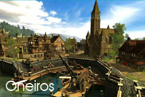

| Übersicht,
Anschläge und Stammtisch (RPG) |
|
Platz für Turatempel
|
Icke wieder
  |

Bis zu den nächsten Moltagen im Dunkelfrost sucht die Tura geweihte Universitäts- und Handelsstadt Oneiros einen Tempelbauer.

Der Platz für die Tempelanlage befindet sich im wunderschönen Wassergarten (grünes Kreuz):

Bestenfalls ist der neue Bauherr/die neue Bauherrin turagläubig aber dies ist keine Bedingung.
Ein Herz für Turapriesterinnen
Fürst Ottor Waefre,
Vorsteher von Oneiros
Zur 23. Stunde am 19.Erntemond im Jahre 454 |
31.03.13 16:00
 |
|
Icke wieder
|
Erledigt. Besten Dank!
Fürst Ottor Waefre,
Vorsteher von Oneiros
Zur 4. Stunde am 36.Erntemond im Jahre 454 |
04.04.13 10:47
|
|
| Farodan (RIP) |
Das heist, es gibt nun einen Tura-Tempel in Oneiros?
Freiherr Farodan,
Vorsteher von Landreth
Zur 15. Stunde am 40.Erntemond im Jahre 454 |
05.04.13 11:43
|
|
Icke wieder
|
Jawohl, der ehrenwerte Lehrmeister Lohs hat diesen höchstpersönlich erbaut. Eine Bereicherung unserer Stadt des Wissensaustauschs und dazu noch beste Zwergenbaukunst!
Die Moltage und Pilger können kommen.
Fürst Ottor Waefre,
Vorsteher von Oneiros
Zur 18. Stunde am 45.Erntemond im Jahre 454 |
06.04.13 16:22
|
|
Übersicht,
Anschläge und Stammtisch (RPG)
|